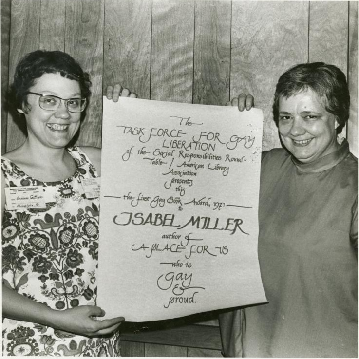
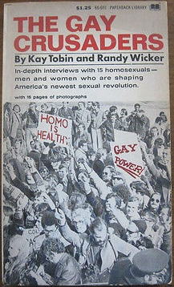
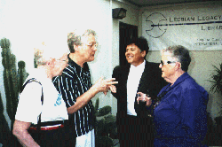
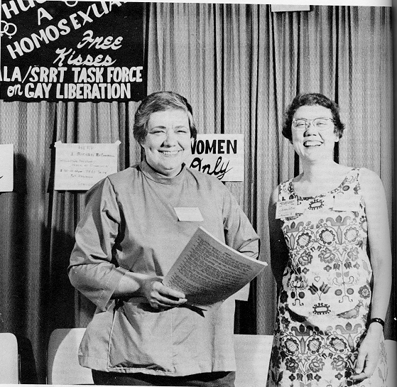

| HOME | SITE MAP |

Barbara and Isabel Miller (Alma Routsong)
at the first Gay Book Award
ceremony (Dallas, 1971).
Photo by Kay Tobin Lahusen. In DARING TO FIND OUR NAMES
(1998).
Barbara has been an activist since 1958, "when there were scarcely two hundred of us in the whole United States. It was like a club - we all knew each other." In 1958 she established the first East Coast Chapter of the first known lesbian organization in the United States, The Daughters of Bilitis (DOB - founded in 1955 in San Francisco). She later edited THE LADDER, DOB's national magazine (1956-1972) from 1963 to 1966. She subtitled it "A Lesbian Review" and introduced photo covers of gay women.
She marched in the first gay rights picket lines in the mid 60s at the White House and The Pentagon (Washington) and Independence Hall (Philadelphia). "It was risky and we were scared. Picketing was not a popular tactic at the time, and our cause seemed outlandish even to most gay people." She was a charter member of the Boards of Directors of the National Gay and Lesbian Task Force (founded 1973) and the Gay Rights National Lobby (founded 1976), which was the forerunner of the Human Rights Campaign.
From 1971 to 1986, she headed the Gay Task Force of the American Library Association and edited its "Gay Bibliography" and other gay reading lists. She wrote a brief history of the group called "Gays in Library Land" which was published in 1990 and is reprinted in DARING TO FIND OUR NAMES (1998). She also starred in the first-ever gay kissing booth, called "Hug a Homosexual." The booth was run by the gay librarian's group at the 1971 national convention of librarians.
In the 1970s, she produced several gay exhibits at conventions of the American Psychiatric Association (such as "Homophobia:Time for Cure" and "Gay Love is Good Medicine"). She was also a fairy godmother to the emerging caucus of lesbian and gay psychiatrists.
She has addressed over 350 audiences, gay and non-gay, and especially enjoys running workshops such as "Lavender Leverage:How You Can Make a Difference" and lecturing on "Gay and Smiling:Tips From My 40 Years As a Gay Activist."
She served for three years on the Board of the Delaware Valley Legacy Fund, which promotes and directs philantropy to benefit the local gay/lesbian community. She is on the advisory board of the Philadelphia Lesbian and Gay Task Force, and on the Endowment Commitee for the Hormel Center Gay and Lesbian Library at the San Francisco Public Library. She is a member of the Gay and Lesbian Alliance Against Defamation, Parents and Friends of Lesbians and Gays, The Human Rights Campaign, the gay TV show "In the Life (which includes memberships), and the ACLU.
She appeared in the classic documentary "Before Stonewall" (1987) and is featured in the documentary "Out of The Past (1998).
She and her long-time partner Kay Tobin Lahusen are currently trying to organize forty years' worth of movement memorabilia - correspondence, artifacts, publications, photographs, and much more - for future distribution to various gay/lesbian archives.
Barbara says: "I continue to march, to boost the cause, to give practical help, and to cheer other activists and supporters."
Barbara can be contacted at GittingsB@aol.com
Articles By and About and Interviews with Barbara:

GAY CRUSADERS (1972). Contains a chapter on Barbara. This collection of interviews was compiled by Kay Tobin (Lahusen) and Randy Wicker. Kay likes to stay in the background, but has contributed much to the gay/lesbian movement and was one of its first photographers.
MAKING HISTORY (1992). Contains two interviews with Barbara and Kay.
VISIBILITIES MAGAZINE, 9/1990. Profile of Barbara.
PROFILES IN GAY AND LESBIAN COURAGE (1991). Barbara was one of 8 pioneers interviewed for this book.
GAY AND LESBIAN BIOGRAPHY (1997) Entry on Barbara.
DARING TO FIND OUR NAMES (1998). One article by Barbara on the Gay and Lesbian Task Force of the ALA and a photo scrapbook of the Task Force, 1971-1972. Photos by Kay and captions by Barbara

Kay, Barbara, Jeanne Cordova and Ivy Bottini
at the Lesbian Legacy Collection open
house. Los Angeles, May, 1998.
Photo by Y. Retter.
Links to images of Barbara:
Barbara & Alma Routsong at the
ALA Gay Liberation Kissing Booth (1971)

Brief biography of Barbara and web page compiled by Yolanda Retter. c. 1998